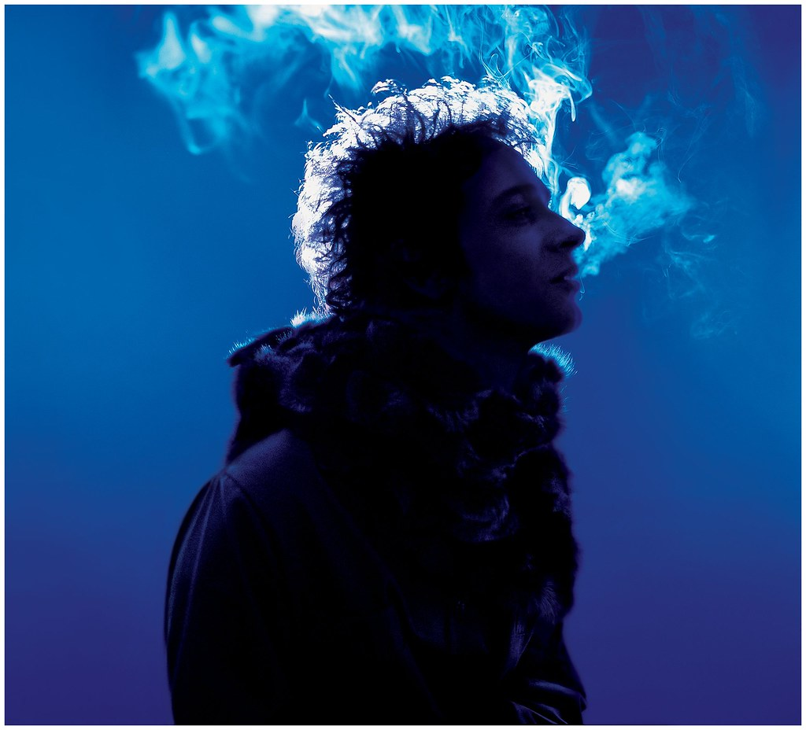

El rock nacional argentino es un género musical que ha dejado una huella imborrable en la historia cultural del país y ha trascendido fronteras, ganando reconocimiento internacional. Surgido en la década de 1960, este movimiento musical ha evolucionado a lo largo de los años, adaptándose a diferentes estilos y tendencias, pero siempre manteniendo su esencia rebelde y contestataria.

Uno de los hitos más importantes en la historia del rock argentino fue el surgimiento de bandas como Los Gatos y Manal a mediados de la década de 1960. Estas bandas fueron pioneras en fusionar el rock con la música folklórica argentina, creando un sonido único que resonó en toda una generación.
En la década de 1970, el rock argentino vivió su época dorada con bandas como Sui Generis, Almendra, Pescado Rabioso y Invisible, entre otras. Estas bandas no solo marcaron un hito en la historia del rock argentino, sino que también abrieron el camino para nuevas generaciones de músicos y bandas.

La llegada de la dictadura militar en 1976 supuso un duro golpe para el rock argentino, ya que muchos músicos fueron perseguidos, encarcelados o exiliados. A pesar de esto, el género siguió vivo gracias a bandas como Serú Girán y Charly García, que continuaron produciendo música de alta calidad y marcando la pauta para el rock argentino de los años venideros.

En la década de 1980, el rock argentino experimentó una explosión de creatividad con bandas como Soda Stereo, Los Fabulosos Cadillacs y Sumo, que llevaron el género a nuevos niveles de popularidad y reconocimiento internacional. Estas bandas no solo conquistaron el mercado argentino, sino que también lograron captar la atención de audiencias en todo el mundo.

En las décadas siguientes, el rock argentino siguió evolucionando y diversificándose, con la aparición de nuevas bandas y artistas que exploraron diferentes estilos y sonidos. Hoy en día, el rock argentino sigue siendo una parte fundamental de la cultura musical del país, con bandas como Babasónicos, Los Auténticos Decadentes y La Vela Puerca, entre otras, que continúan llevando la antorcha del rock argentino a nuevas generaciones de oyentes.
En resumen, el rock nacional argentino es mucho más que un género musical, es un reflejo de la historia y la identidad de un país, una manifestación artística que ha sabido adaptarse a los tiempos y seguir vigente a lo largo de los años.
*Cada imágen tiene un link a la página de wikipedia de cada banda/artista
| Nombre del Álbum | Banda/Artista | Año |
|---|---|---|
| Pappo's Blues | Pappo's Blues | 1971 |
| Artaud | Pescado Rabioso | 1973 |
| Clics Modernos | Charly García | 1983 |
| Soda Estereo | Soda Estereo | 1984 |
| Gulp! | Patricio Rey y sus Redonditos de Ricota | 1985 |
| Bocanada | Gustavo Cerati | 1999 |